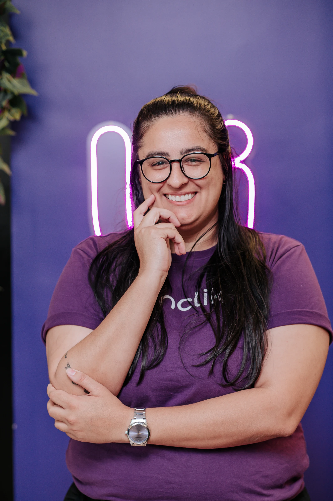

Contabilidade
para negócios
digitais.
Você cria conteúdo, vende infoprodutos ou presta serviços no digital? Conte com a Unclik para abrir seu CNPJ, trocar de contabilidade ou organizar a saída do MEI.
Atendimento humano e HUB próprio para acompanhar números, documentos e processos da sua empresa.
em todo o Brasil.

Do conteúdo ao código, conheça os negócios que atendemos.
Abrir empresa, trocar de contabilidade ou sair do MEI?
Abertura de empresa
Vai formalizar o trabalho com conteúdo, infoprodutos ou serviços? Orientamos as atividades do CNPJ e o enquadramento tributário da sua empresa.
Transferência de contabilidade
Já tem CNPJ, mas falta clareza sobre impostos e obrigações? Converse com contadores que conhecem o funcionamento dos negócios digitais.
Migração de MEI para ME
O MEI deixou de acompanhar o seu negócio? Entenda a mudança para ME e organize as novas obrigações com orientação contábil.
HUB Unclik: sua empresa na tela,
nossa equipe por perto.
No HUB Unclik, você consulta informações da empresa e acompanha processos. Quando precisa entender o que fazer, conta com nossa equipe de contadores.
Fluxo de caixa
Visualize entradas e saídas a partir das informações financeiras registradas na plataforma.
Documentos e impostos
Consulte arquivos, relatórios e guias da empresa no mesmo lugar.
Andamento dos processos
Acompanhe as etapas da abertura do CNPJ e de outras solicitações.
A experiência de quem está com a gente.
“São uma contabilidade que eu tenho TOTAL confiança, sempre dispostos a ajudar, sempre informando sobre tudo que está acontecendo …”
“… Ter uma contabilidade especializada no mercado digital faz toda diferença! Recomendo fortemente!”
“Confio e indico a Unclick. Sou cliente há quase 2 anos e não troco. Tudo muito assertivo, prático e organizado. …”
“… a Unclik não é só a melhor contabilidade que já trabalhei, eles são a melhor prestação de serviço que já vi no mercado.”
“Sou cliente há alguns anos, sempre me ajudam com tudo o que preciso! Recomendo a todos!”
“Eu gosto muito do trabalho de vocês, a comunicação é muito fácil, vocês sempre respondem as minhas dúvidas e adoro os informes por e-mail. Realmente indico demais!”
“Eu já indiquei várias vezes! Pois sinto que a minha empresa está sendo bem cuidada e com potencial de crescimento por ter vocês.”
“Estamos há 5 anos com o time da Unclik e eu me sinto muito feliz por cuidarem tão bem da IGT International Coaching. Eles me dão a tranquilidade de me preocupar com o que realmente importa. Parabéns e Vamoooooo!”
 Geronimo Theml@geronimotheml
Geronimo Theml@geronimothemlConteúdo para quem empreende no digital.
Artigos, vídeos e materiais para entender os impostos, a contabilidade e a rotina do seu negócio digital.


O que você quer saber antes de conversar?
Sim. Nosso atendimento é online, com suporte por WhatsApp e e-mail para negócios digitais e prestadores de serviços de todo o Brasil.
Sim. A Unclik atende empresas que querem transferir a contabilidade. Nossa equipe orienta você sobre os documentos e as etapas da mudança.
Sim. Orientamos as atividades e o enquadramento na abertura do CNPJ, além da migração de MEI para ME, considerando a situação de cada empresa.
Você conta com nossa equipe de contadores. O HUB complementa esse acompanhamento, facilitando a consulta a informações, documentos e processos.
O BPO financeiro é contratado à parte, conforme o escopo. O acesso às ferramentas financeiras do HUB não equivale a contratar a execução dessas rotinas pela Unclik.
O valor considera o plano, as características da empresa e os serviços contratados. Conheça os planos da Unclik e converse com nossa equipe para receber uma proposta.
Vamos conversar sobre o seu negócio digital?
Conte o que você faz e em que momento sua empresa está. Vamos orientar seu próximo passo com a Unclik.